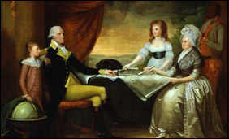

About 'The Dish on Washington'
This site explores the world of colonial Virginia dining through the experience of George Washington and his family.
Today, we care more and more about where our food comes from and how its prepared. This, however, was a constant concern for colonial Virginians! Growing, buying, preparing and obtaining food was a never-ending job, even for wealthy colonists like George Washington.
There were many other people who lived at Mount Vernon, however. A community of almost 300 enslaved people had their own unique experiences and struggles growing, cooking and creating food. Though their story is not discussed here, it is extremely important and deserving of attention in the future of this site.
Look out for fun facts!

When you see this icon:
That means there is an interesting fact about the Washington's and food. Keep an eye out!